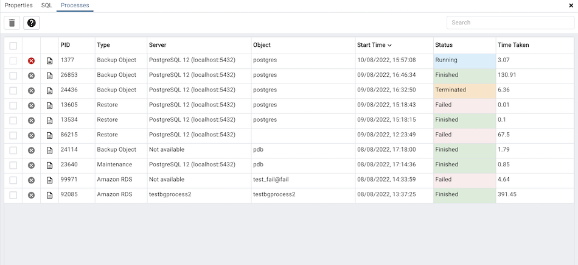
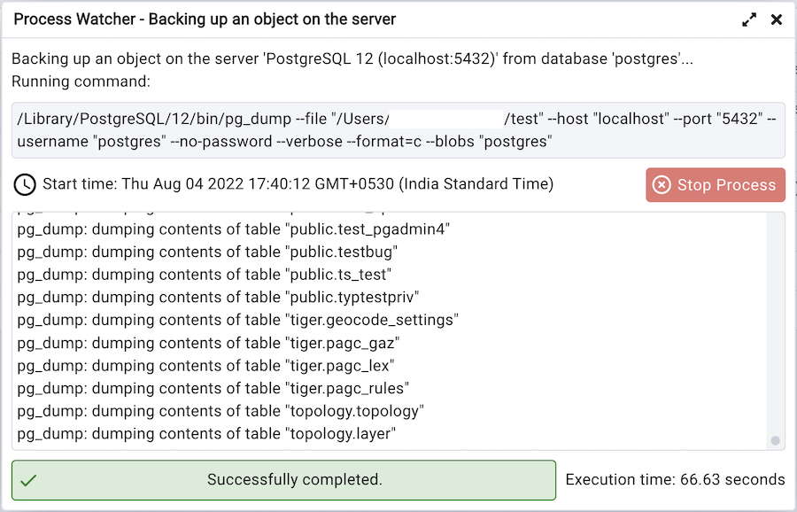

Processes¶
There are certain tasks which pgAdmin runs in the background. The processes running in the background can be viewed in the processes tab. It shows the process details of Backup, Restore, Maintenance, Import/Export and Cloud instance creation.
The columns of the processes table shows:
The PID of the forked OS process.
The Type of the task being performed.
The Server name for which the task is.
The Object can be a database, table, mview or anything which gives more info.
The Start Time of the process, sorted descending by default.
The current Status of the process. It can be Running, Finished, Failed, Terminated.
The Time Taken to complete. It will keep updating if it is running.
There are two action buttons on each row:
The Stop Process button allows you to kill a running process.
The More details button allows you to open the process watcher which shows the process logs and other details.
You can also select the checkboxes and click on Delete and Acknowledge button on the top to clear the process info and logs.
Process Watcher¶
The Process Watcher logs all the activity associated with the process/task and provides additional information for troubleshooting Use the Stop Process button to stop the Backup process.
备注
If you are running pgAdmin in Server Mode you can click on the icon in the process watcher window to open the file location in the Storage Manager. You can use the Storage Manager to download the backup file on the client machine .